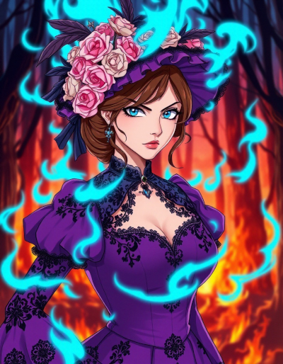
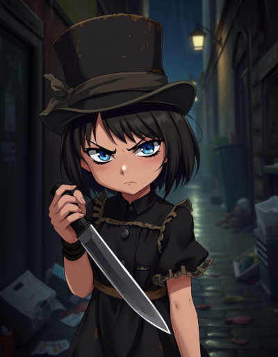
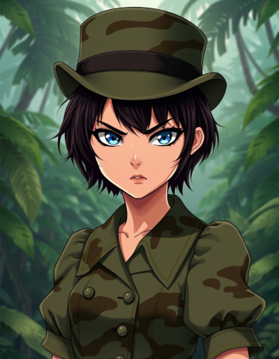

| Name | Artemis Watson |
|---|---|
| Known Aliases |
The Hunter The Boss Little Miss Little Miss Secret LMS Brat Girl Hey you! |
| Title/Rank | None |
| Birthplace | New York City, New York, United States |
| Occupation |
Demon Hunter Paranormal Investigator Witch Ashen Blade |
| Relationships |
Annmarie Nossett (Mother) Jake Watson (Father) Mashu’ra (Mother’s familiar) Reggie Stewart (Co-worker, deceased) Clayton Simmons (Co-worker) Lara Simmons (Co-worker, post 1973) Pride/Otto Vogerath (Enemy) |
| Appearances |
Novels Short Stories |
Artemis Watson
Artemis Watson is the protagonist in the series Ashen Blades, though more technically, she has no name.
She has brown hair, extremely blue eyes and an obsession with wearing the color black. She always wears the top hat she inherited from her father. She also perpetually wears gloves. For preference, she prefers elbow-length, fingerless gloves. This might initially seem to be a stylistic choice, but there are deeply psychological reasons for this. She is technically a goth, but she was dressing that way before the term became popular. In her own mind, she once thought, “Black is where it’s at.”
She’s a half-demon, half-human girl that was born in 1897, in New York City. Her mother was a demon witch and her father was a demon hunter, more specifically an Ashen Blade, which is an organization dedicated to hunting and eliminating demons on Earth, for the sake of humanity. This gives her both the powers of a demon and a witch, two forms of magic that are stronger together.
Artemis looks entirely human at a glance, but that’s only because she always wears a skirt that hides her tail, which tends to twitch in time to her mood, much like that of a cat. Combined with the tendency of her eyes to easily reflect light, a little thought can bring one to the conclusion she has some traits in common with cats. This is because her mother had feline traits in demon form, though her demon form was the size and shape of a regular house cat.
She suffers from a curse from a demon that makes her unable to say anything other than “It’s a secret”, which tends to really irritate her. As such, she’s really embraced rude gestures as one of her favorite ways to communicate.
Due to the nature of demons and the way their true names can be used to compel them, Artemis was never actually named by her parents and all the ways that others refer to her are merely nicknames. Personally, she calls herself ‘the Hunter’, because she considers all demons prey and has made killing them all her mission in life.
The black market arms dealer she bought her guns from in the 1940’s gave her the nickname ‘Little Miss Secret’, based on the only thing she can say. She was always fond of him, so she loves that nickname. Her friends often shorten it to just ‘LMS’.
During the third book, she was briefly able to speak her mind and her private detective partner chose to name her Artemis, rather than calling her ‘the Hunter’, because that sounded more like a title than a name to him. Her last name comes from her father, Jake Watson.
Artemis is mischievous, but often cheerful and smiles a lot, at least when she isn’t angry. Unfortunately, she’s often quite angry. She’s prone to playing practical jokes, especially with grumpy and serious people. With demons, her mischievous side becomes extremely cruel, because she hates them so much.
This is another area in which she takes after a cat and she sometimes tortures demons to death the way a cat plays with a mouse, though she’s grown slightly less cruel over time, because demons have sometimes escaped from her during such moments, leading to her giving them quicker deaths as she’s grown more mature.
Like a cat, Artemis is extremely smell-oriented, with an ability to discern humans from demons by scent. She can also use her heightened sense of smell to fight blind, which gives her great advantages in a fight.
Special Powers
Artemis has the powers of both a demon and a witch, though she leans more heavily on her demon powers, because they came with useful instincts that tell her how to use them.
Her witch powers have been much slower to mature, but so far, she’s demonstrated fire magic hot enough to produce blue flame and smoke magic.
Her demon powers give her the ability to teleport between shadows, extreme physical durability, great strength, super-human speed and an enhanced sense of smell. Hypothetically, she’ll also never die of old age.
Artemis is fond of combining her ability to teleport with her sense of smell in the dark, allowing her to teleport from enemy to enemy in a fashion that leaves her opponents terrified about where she might pop up next.
One of her least favorite powers is the ability to consume demons to recharge her magical reserves, which is something demons sometimes do to each other, when they’re feeling peckish. She can’t stand the taste of them, however.
She combines smoke magic with demon magic to produce solid magical projections of objects stored in her hat.

The spirit of her mother acts as a living protective spell that that keeps the world at arms-length from Artemis, unless she chooses to let someone in.
Anyone that tries to touch her befalls a mysterious, magical accident brought on by probability manipulation magic. Anyone that intends her harm tends to experience a deadly accident. Demons are rarely killed by this effect, due to how durable they are, but it can still be quite damaging to them.
However, the spell isn’t perfect: indirect attacks and strikes can hit her.
The spirit of her dead father is bound to her hat, which she subconsciously turned into a portal to a pocket dimension. Her father manages manipulating space and sometimes even time for her, extending the level of control she can exert over the interior of her hat, as well as the precision with with she can manipulate the contents.
The space inside her hat is fairly large and she once stored an entire military jeep within it.
Her most powerful magical technique is a combination of witch fire magic and demonic void magic, which produces what’s known as the all-consuming flame. This is so hot, it glows in the ultraviolet spectrum and most anything that’s hit by it is burned to nothingness. Demons that are struck by this are effectively consumed by Artemis, giving her a short-term boost to her magic powers.
The all-consuming flame is one of the few ways she knows of to permanently kill a demon, who normally return to Hell when killed, then seek to return to Earth.
She’s encountered many nature spirits over the years, each of which serves as the avatar of a single element. In 1972, the Wood Spirit (AKA the Jungle Spirit) picked a fight with her and the end result was Artemis gaining access to its powers, which gave her the power to transform into a huge, black cat or to armor her clothing with iron wood panels, coming to resemble an armored knight with a shield.
She’s since had similar experiences with Water, Air and Metal.
The Water Spirit gave her the power to turn into a massive, black-skinned shark and other water-related powers she has little use for, aside from the ability to breathe underwater and survive the pressure at any depth, which is sometimes handy, since she never did like using scuba gear.
The Air Spirit gave her the power to control air currents and fly. She can also create bursts of air in a vacuum or refresh stale air, which allowed her to breathe on the Moon. Hypothetically, she might be able to turn into a large, black bird, but she’s never tried to.
The Metal Spirit gave her the power to encase herself in metal at will and presumably the ability to control metal objects. She once used its power to cover her clothes in armor plates composed of alternating layers of titanium and tungsten, for much greater durability than her iron wood armor, at a mere fraction of the weight.
Favored Weapons and Equipment
Artemis started out using various discarded kitchen knives she rescued from the trash, with a clear favorite being a full-size butcher’s knife. These were later supplemented with a baseball bat and ball. Unfortunately, the ball and bat were destroyed fighting demons.
In more modern times, Artemis has mostly switched to guns that fire .45 rounds, because they have enough punch to put a hole through a skull, which is the only way to kill a demon. She has an M1911 pistol and a Thompson sub-machine gun. The Tommy gun is her favorite, but due to the expense of full-auto fire, the rest of the detective agency she works with have convinced her to use it only when necessary.
She eventually replaced the baseball bat with a Japanese wakizashi that has a blue hilt wrapping and a tsuba (hilt guard) in the shape of an open, blue rose. This has so far proven to be durable enough to withstand her full demonic strength. She often projects her all-consuming flame onto the blade, which extends her reach.
Here’s the (mostly) untold story of this sword: it was originally a show piece made to hang on a wall, but the smith that made it still took the work seriously, because even a decorative weapon might be needed during a home invasion. The last of its Japanese owners immigrated to the United States before World War II, but as things became difficult for Japanese, they needed money and pawned it. When the war got even more serious, the shop had a hard time selling it and Artemis picked it up for a bargain price.
When Artemis needs heavier weapons, she has a .50 Browning M2 machine gun with a shoulder strap to give it a little extra stabilization, which she’s strong enough to fire from the hip. The few opponents that were unlucky enough to see this weapon didn’t last long.
Her biggest and most ridiculous weapon is an M168 Vulcan Cannon, which is normally vehicle mounted, but she can just barely manage to fire it from the hip, though she isn’t very accurate with it, because it’s just too big. On the other hand, considering the rate of fire that thing is capable of, she tends to spray and pray. She mostly keeps it for the sake of her gun collection, rather than considering it a useful weapon, though a small number of demons have been on the receiving end of it, on occasions when she really lost her temper. She rarely has ammunition for it, because the bullets are not available at sane prices.
Her top hat is one of her most prized possessions, because it belonged to her father. It contains a pocket dimension, which holds all of her other possessions and serves as the home of her mother’s familiar, Mashu’ra, a juvenile demon in the form of a kitten. Mashu’ra serves Artemis by looking after and caring for her weapons, including reloading her guns, though no one is quite sure how a kitten manages that.
In 1972, the Wood Spirit (AKA Jungle Spirit) gave Artemis some magic clothes that change shape at a whim and are durable enough to act as light body armor that can stop bullets. They also clean and repair themselves. They can take on just about any style, including useful forms like a space suit or hazmat gear.
In 1986, the Water Spirit gave her a shark-tooth necklace that really doesn’t match her usual style of accessories, but she does reluctantly wear it. It hasn’t yet displayed any magical abilities, but it may in the future.
In 2024, the Air Spirit gave her a decorative, silver comb, which came with the incidental power to alter her hair style and color at will. She uses it to change her hair color as her mood changes, or as her twisted and black sense of fashion dictates. She tends to pick somber colors that match her goth-like persona, including blue, when she was depressed. However, when Alice emerged and took control of their body, her hair turned blond (see the section on Psychology for more information).
Also in 2024, the Metal Spirit gave her a bracelet with black, cast-iron plates linked by stainless steel chain. It hasn’t yet displayed any magical abilities, but it may in the future. She isn’t one for jewelry, but she does like this accessory, since the Metal Spirit was wise enough to recognize her sense of style, unlike the Water Spirit.
Early Life and Growth

At the age of three years old, in the year 1900, her parents were murdered by a demon in front of her, but due to her mother’s magic, their spirits were bound to her. Her mother, Annmarie, turned herself into a living, protective spell.
The father of Artemis was also killed, but his spirit was bound to his top hat, a favorite item. This is the same top hat Artemis wears.
Artemis has followed a rather unusual pattern of growth all her life: she doesn’t grow older until she emotionally matures, then her body changes fairly instantly, to match her mental state.
For example, when she was twenty-five years old, she looked ten, because in all that time, she never quite matured enough to progress any further.
In 1922, she had a chance encounter with a private detective, demon hunter and Ashen Blade named Reggie Stewart. At the time, she was little more than a remorseless killing machine that preyed on the demons of New York City, using a butcher’s knife.
In that first encounter, she stole one of Reggie’s pistols, her very first gun, which she’s never given up.
Upon learning of the man’s dangerous job, she began following him and eventually realized she’d found a kindred spirit. They became partners and together, they really cleaned up the streets of New York.
While they were together, Artemis matured until she resembled a girl of fifteen years, though she remained short and petite, at only five feet tall.
Eventually, in 1942, Reggie was killed and the Ashen Blades assigned her a new detective partner: Clayton Simmons.

She really didn’t mature much over the next few decades, until the two of them went to Vietnam, in 1972, to exterminate an arch-demon that had come to Earth.
While they were there, Artermis had a rough experience with the death of a solider and got human blood on her hands, leading to an emotional breakdown, but when she eventually recovered, she grew a little older.

In book three, the curse that prevents her from speaking her mind was briefly lifted and she was able to speak with her father. After that emotional experience, she once again grew a little older.
In book four, after the loss of a dear friend, the grieving process finally fully took her into adulthood, because she was forced to discard some very childish coping mechanisms in order to heal.
Psychology
Due to the hardships of being a half-demon and the trauma Artemis has experienced, she isn’t exactly mentally stable. In point of fact, she has multiple personalities.
The first is The Hunter, which is her base personality. The Hunter represents her ego.
The second is her inner demon, which she’s spent a lifetime fighting to contain, because this personality is a murderous creature with no moral compass. The demon is more or less her Id, an emotional creature with no self-control.
The one time the demon gained full control of their body, she transformed into a humanoid cat monster absolutely brimming with muscle, which is more or less the demonic form of Artemis.
In that battle, the demon also publicly declared its name: The Eighth Deadly Sin, Willful Insanity. She goes by Insanity, for short.
Hypothetically, Insanity was born the day Reggie Stewart was killed, because Artemis completely lost control of herself, only coming to her senses after the mixed group of demons and humans was defeated, with the humans fleeing, while the demons were…extremely dead, with evidence of claws and teeth.
Reggie witnessed the incident before he died and spoke as if he was impressed, but Artemis has no memory of it.
Strangely enough, Insanity has a fondness for Jake, their father.
Insanity and the Hunter have a rather unusual relationship, in that they hate and love each other, but neither of them would have it any other way. When they face outside threats to their mind, like telepathic attacks, they usually face them together, despite the way Insanity insists she’ll someday eat the Hunter.
What it comes down to is a matter of predator and prey dynamics, in which Insanity has claimed the Hunter as prey, so Insanity refuses to let anyone else kill her.

During the climax of book four, Artemis was splashed with approximately an entire pint of LSD, which resulted in the emergence of a third personality, who calls herself Alice, due to a song that was playing at the time (White Rabbit, by Jefferson Airplane). Due to how confused she was at the time, she took on an approximation of the appearance of Alice from Alice’s Adventures in Wonderland, blond hair and all.
Alice cares for the Hunter like a sister and has demonstrated a tendency to side with her against Insanity, helping to keep the demon under control.
Quite aside from this, Artemis occasionally hallucinates that she has blood on her hands, because she was there when Reggie died and got blood all over them, which is why she wears gloves. This hallucination got worse in 1972, when her gloves got splashed with blood.
When Artemis gets tremendously angry, beyond merely losing her temper, her eyes glow. This is part of her demonic ancestry, though it is exceptionally rare.
Travels
Artemis hates to travel, because she gets extremely motion sick in vehicles. However, she has visited a number of places, both in and out of the United States, including White Sands and Carlsbad Cavern, both in New Mexico, The Cauldron of the Elements (a remote volcanic caldera somewhere in the United States, which once hosted a summer camp), California, Kansas, Canada, The Amazon, Egypt, the bottom of the Mariana trench, Mount Everest, Vietnam, Tokyo in Japan, Alice Springs in Australia, a snowy mountainside that may have been in Tibet, the Moon, and a pocket dimension known as The Last Sanctuary.
Here’s a nice image of Artemis during her brief visit to Tokyo, while her team was taking a break from fighting the demons hiding in the jungles of Vietnam. On this occasion, her magic clothes went native without her giving it much thought.
In 1986, she went undercover at a summer camp that was infested with demons. At the time, she was pretending to be a teenager, despite the fact she was old enough to be the grandmother of the teens that surrounded her. She got particularly cranky while she was there, because she doesn’t like to interact with teenagers.